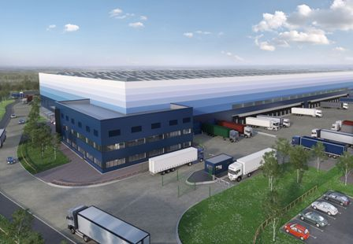

Unipart Group is one of the largest private companies in our sector. We
work with the best companies in the world. We are one of the
Britain's largest employee-owned companies, with the majority of shares
being held by employees. But when the froup formed nearly three decades
ago, it was ideas rather than size that shaped our fortunes.
A lot has changed since then; Unipart is now a highly diversified company bringing a
wide range of benefits to clients in the rail technology, retail, automotive,
financial and public sectors. Each of our client relationships is unique, but
what is common to most is how Unipart enables significant cost reductions, improvements
in capacity and customer service, and a level of engagement with employees
that delivers real commercial benefits. Our operations today span three major
areas: logistics, manufacturing and consultancy. But across all three, there is
a single approach that enables us to deliver more than our clients expect. We call
that The Unipart Way.
Ace Properties
Unipart Group is one of the largest private companies in our sector. We
work with the best companies in the world. We are one of the
Britain's largest employee-owned companies, with the majority of shares
being held by employees. But when the froup formed nearly three decades
ago, it was ideas rather than size that shaped our fortunes.
A lot has changed since then; Unipart is now a highly diversified company bringing a
wide range of benefits to clients in the rail, technology, retail, automotive,
financial and public sectors. Each of our client relationships is unique, but
what is common to most is how Unipart enables significant cost reductions, improvements
in capacity and customer service, and a level of engagement with employees
that delivers real commercial benefits. Our operations today span three major
areas: logistics, manufacturing and consultancy. But across all three, there is
a single approach that enables us to deliver more than our clients expect. We call
that The Unipart Way.